Latest Stories
Everything we have published, newest first. Opinion, recaps, history, and columns across every Bay Area team.
Brock Purdy Is 147 Passes From Being the Most Efficient Quarterback in NFL History. Nobody Wants to Say It Out Loud.
A 104.0 career passer rating against an all-time record of 102.2, and he is 147 attempts — five games — from qualifying. The last pick in the draft is about to own the record book.
They Finally Gave Brock Purdy a Fight. He Won It Going Away.
The most competitive practice of camp — picks, punch-outs, a defense that finally punched back — and Purdy went 12-of-17 on 32 team snaps throwing to guys signed off the street.
The Giants Got Marcelo Mayer for a Reliever Who Walks Everybody. Explain That One, Boston.
The fourth overall pick in 2021, twenty-three years old, five years of control — for Erik Miller, a middle reliever who walked sixteen percent of the hitters he faced. On paper this is a robbery.
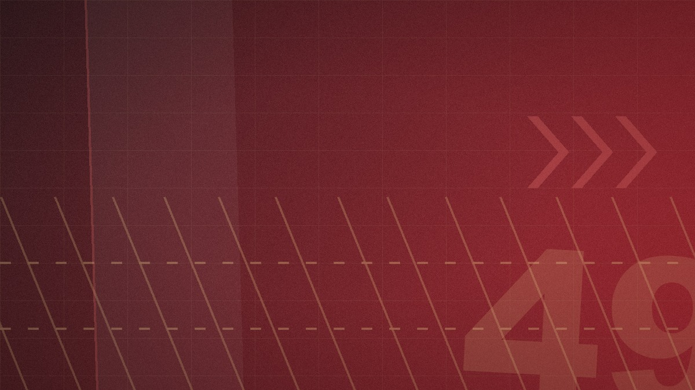
Brock Purdy Is Carving Up Training Camp. Twenty Guys Watched Him Do It From the Sideline.
13-of-14 in team drills, three straight red zone touchdowns and a Dougie in the end zone. On the same field, twenty players were unavailable. Both things are true.
Rangers 6, Giants 0: Eleven Left On Base, Zero for Eight With Runners in Scoring Position
Shut out by a pitcher making his first start since September 2024. Eleven runners stranded. Nineteen games under .500 for the first time all season.
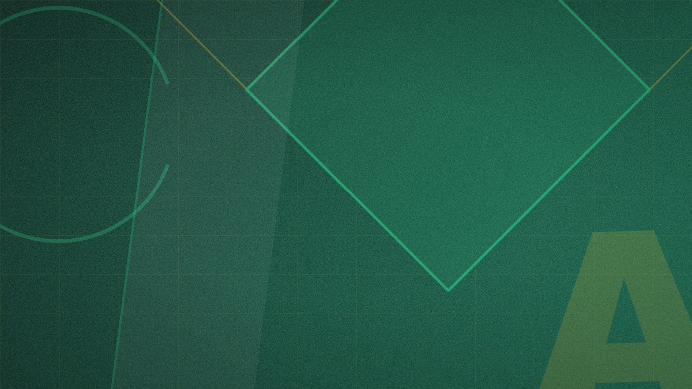
Reds 3, A's 2: Nine Strikeouts, 87 Pitches, and Kotsay Went to the Bullpen Anyway
Jacob Lopez had solved the Reds. He came out in a tie game. Two singles and a sacrifice fly later it was over. Seventh straight loss, 45-69.
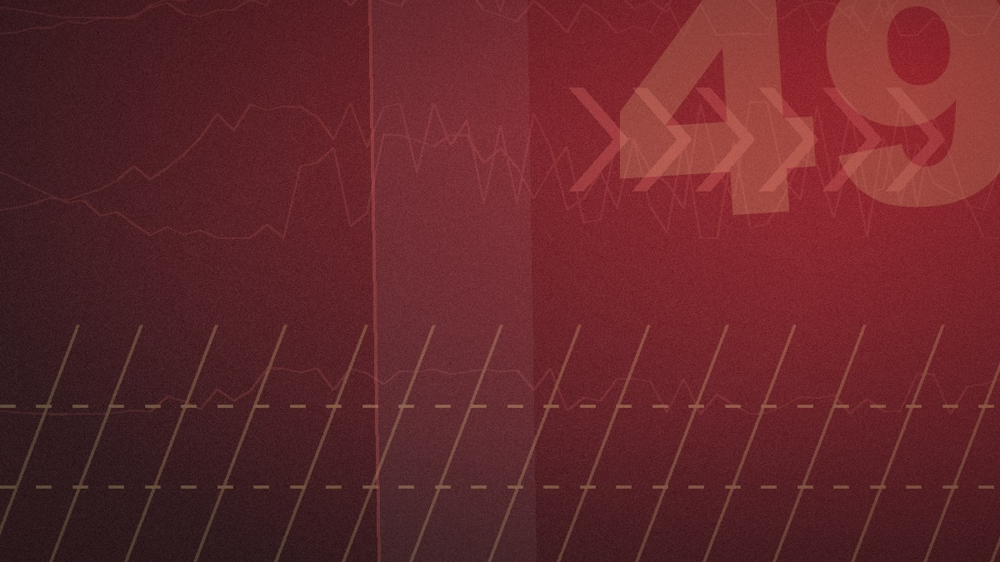
Four Signings in a Week: Okoronkwo, Irwin, Deguara, Hodge, and a Roster Held Together With Tape
A Super Bowl edge rusher off a torn triceps, a Stanford kid coming home, a blocking tight end and a Pro Bowl gunner. Every move makes sense. Needing all four in August is the problem.
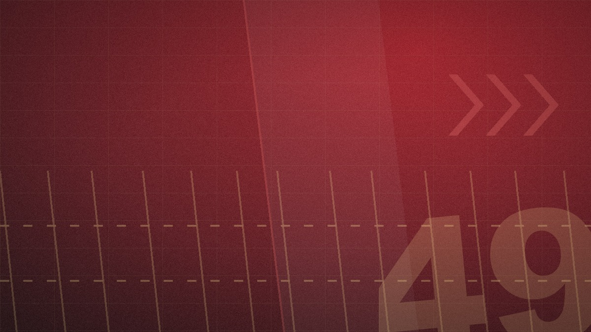
The 49ers Signed KhaDarel Hodge, and That Tells You Everything About This Receiver Room
A 31-year-old Pro Bowl gunner with three catches last season and Raheem Morris ties. Fine player, no complaints. But it is August fifth and we are already signing bodies.
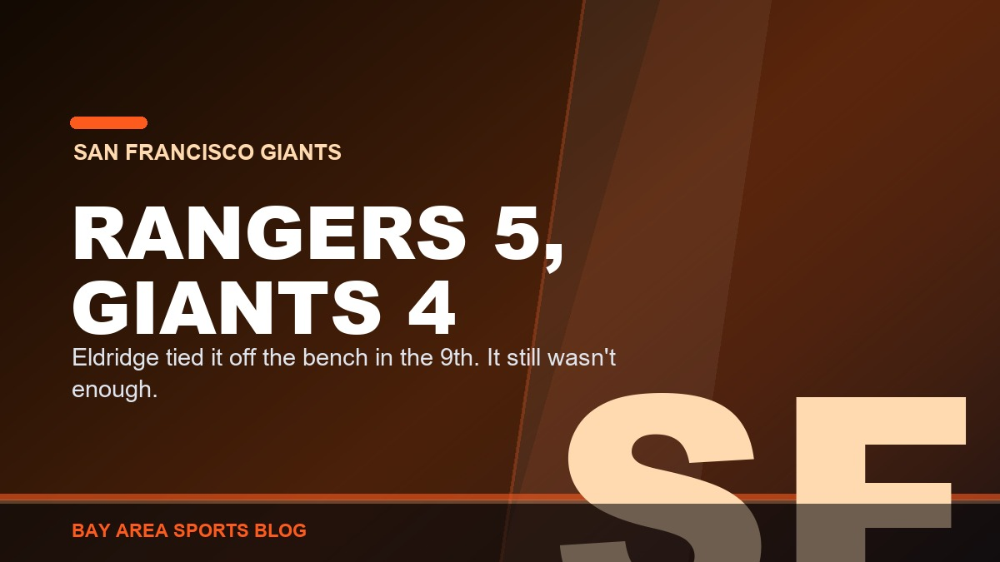
Rangers 5, Giants 4: Vitello Sat Eldridge, Eldridge Tied It Off the Bench, and They Lost Anyway
Bryce Eldridge never started, then tied the game with a pinch-hit two-run single in the ninth. Ezequiel Duran's second double of the night dropped on the warning track and Texas walked it off. 48-66.
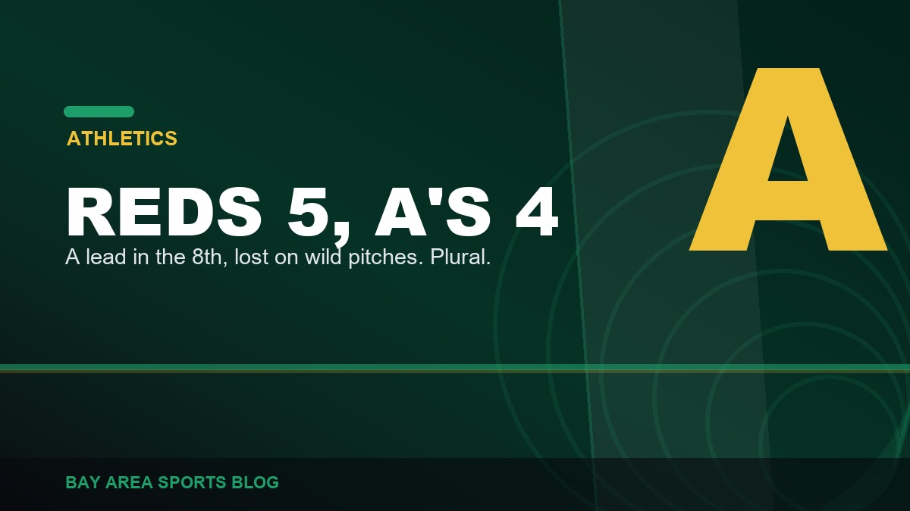
Reds 5, A's 4: They Led in the Eighth and Lost on Wild Pitches. Plural.
The tying run and the winning run both scored without Cincinnati putting a ball in play. J.T. Ginn's six-inning return from the blister, wasted. 45-68, and 0-5 since the deadline weekend began.
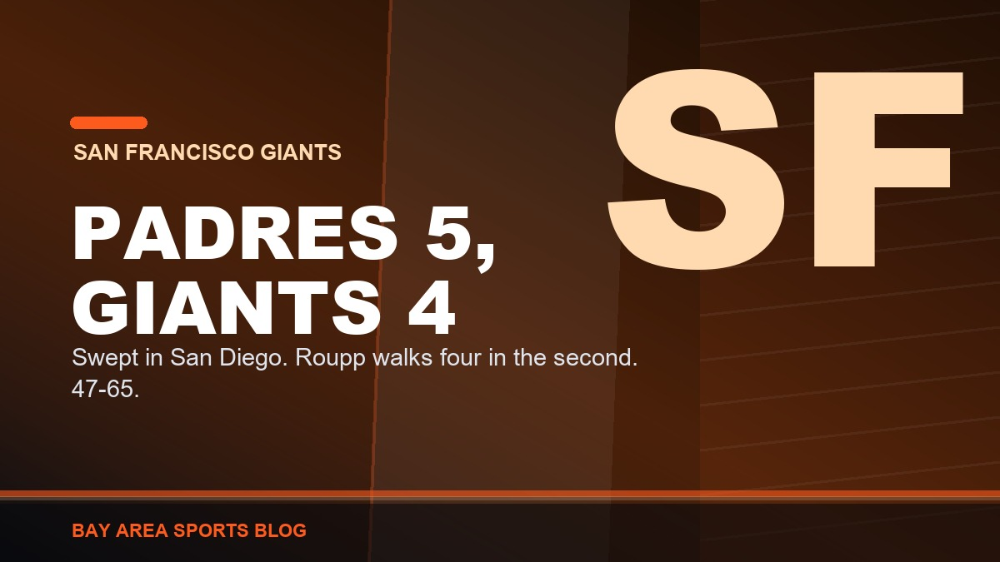
Padres 5, Giants 4: Swept in San Diego, and the Deadline Is Tomorrow
Landen Roupp walked four in a four-run second, the Giants cut it to one three separate times and never got even, and San Francisco left Petco Park 0-3. They are 47-65 and 21-37 on the road.
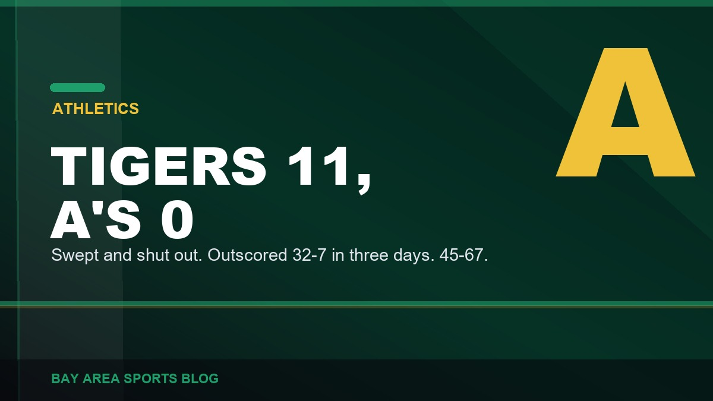
Tigers 11, A's 0: Swept, Shut Out, and Outscored 32-7 in Three Days
Gage Jump walked six and did not finish the fourth, Detroit added four in the eighth, and a position player pitched the ninth. Five straight losses, 45-67, and a weekend they were outscored 32-7.
Tony Vitello Has No Idea What He Is Doing With This Lineup, and Bryce Eldridge Batting Leadoff Is the Proof
Sixty different batting orders in seventy-seven games. Eight different leadoff hitters. And now the 21-year-old middle-of-the-order bat is hitting first. This is why they never get in a groove.
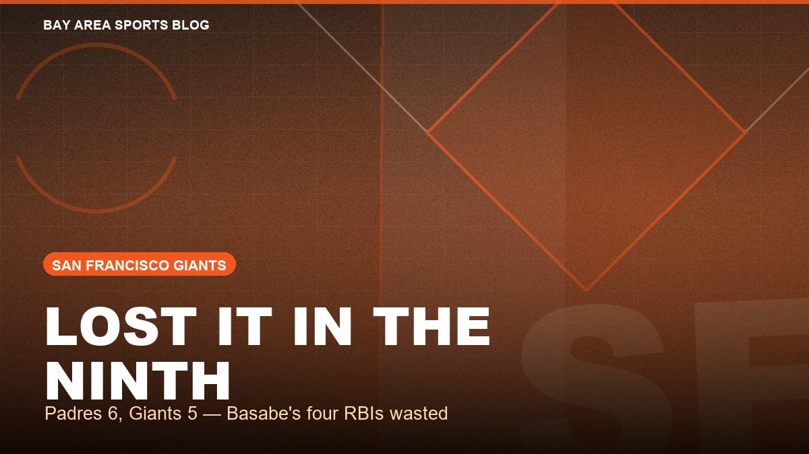
Padres 6, Giants 5: Basabe Tied It Off a 103-MPH Fastball, and the Ninth Threw It Away
A guy playing his third game of the season drove in four, the Giants tied it in the eighth against a man throwing 103, and then gave it right back. 47-64, and 21-36 on the road.
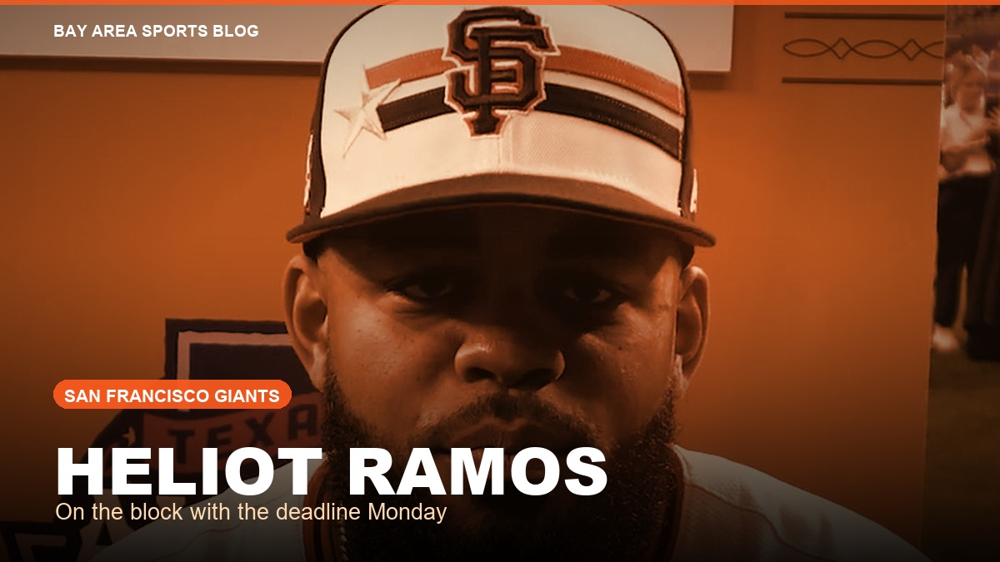
Monday's Deadline Is the Only Interesting Thing Left About This Season
Forty-seven and sixty-four. Ramos on the block, Lee reportedly staying, Arraez and Ray on expiring deals. If Posey does not tear it down Monday, he never will.
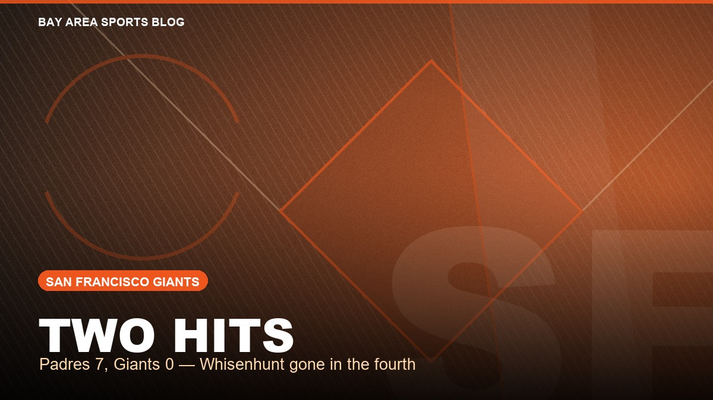
Padres 7, Giants 0: Two Hits. Two. That Is the Whole Night.
Carson Whisenhunt could not get out of the fourth and the lineup managed two hits in nine innings. The good feeling from Thursday lasted exactly a day.
Ricky Pearsall Is Out for the Year, and This Kid Just Cannot Catch a Break
Season-ending IR, PCL surgery coming, and a six-to-12-month road back. Pearsall still has not gotten one clean, healthy run at his career.
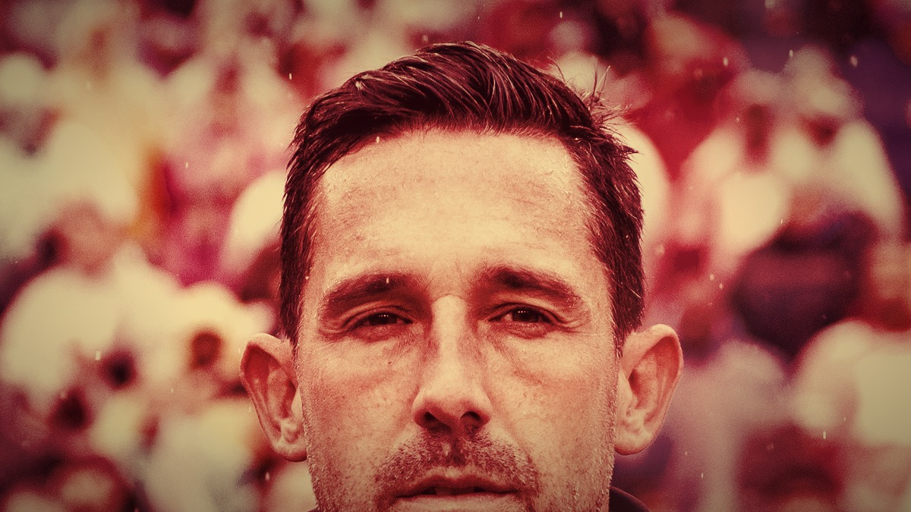
Kyle Shanahan Update: He's Turning the Corner, and Camp Is Feeling It
Pads are on, and the coach is closer to being fully back in the middle of it, less than three weeks removed from a serious car accident.
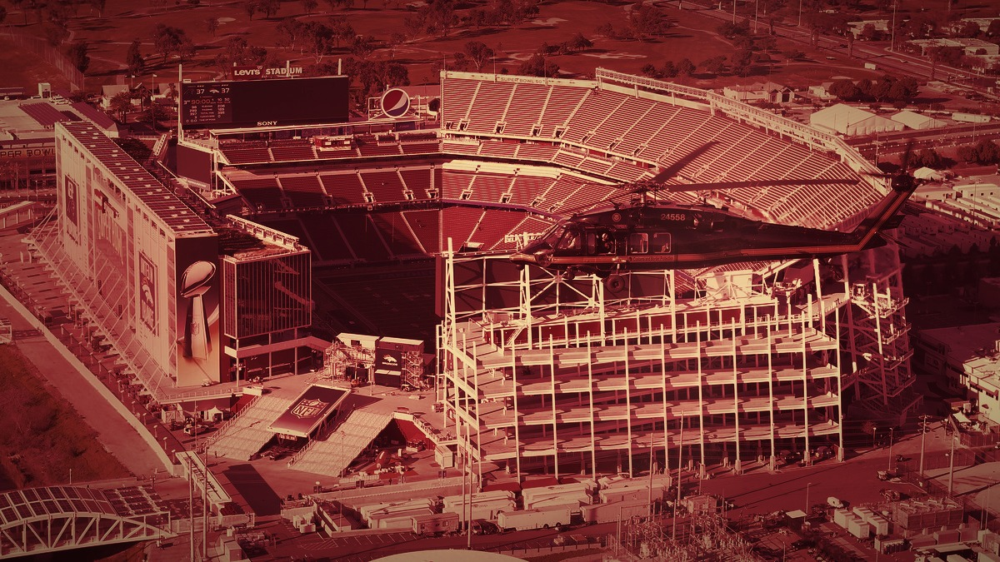
De'Zhaun Stribling Keeps Balling Out in Camp, and a Starting Job Is Starting to Look Inevitable
The rookie wide receiver isn't flashing for a day anymore, he's stacking good day after good day with Brock Purdy.
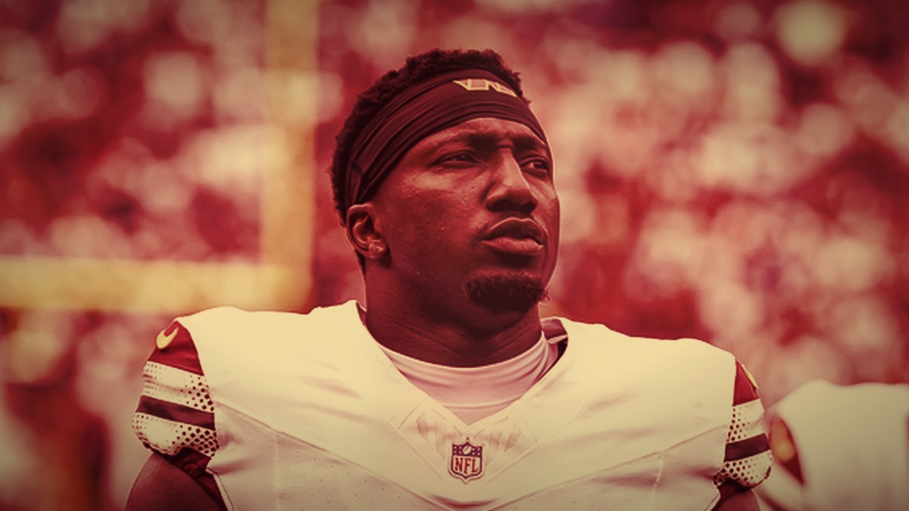
Deebo Samuel Is Coming Home: 49ers Bring Him Back on a One-Year, $7 Million Deal
A low-risk, high-reward reunion. Seven million dollars buys back one of the most uniquely dangerous weapons Kyle Shanahan's offense has ever had.
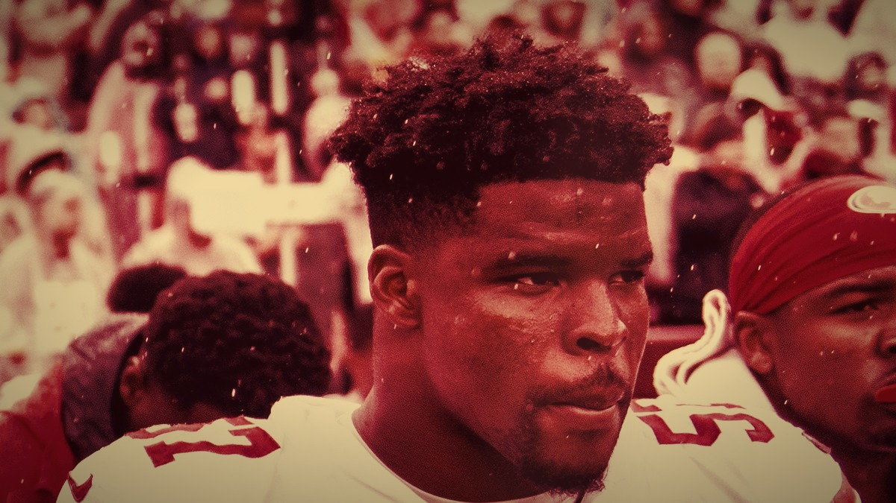
Dre Greenlaw Hit Too Hard on Day One of Pads, and Christian McCaffrey Still Calls Him His Favorite Player
Greenlaw came out flying on the first padded practice of camp, and McCaffrey wasn't thrilled to be on the wrong end of it. He's also said Greenlaw is his favorite player in the league.
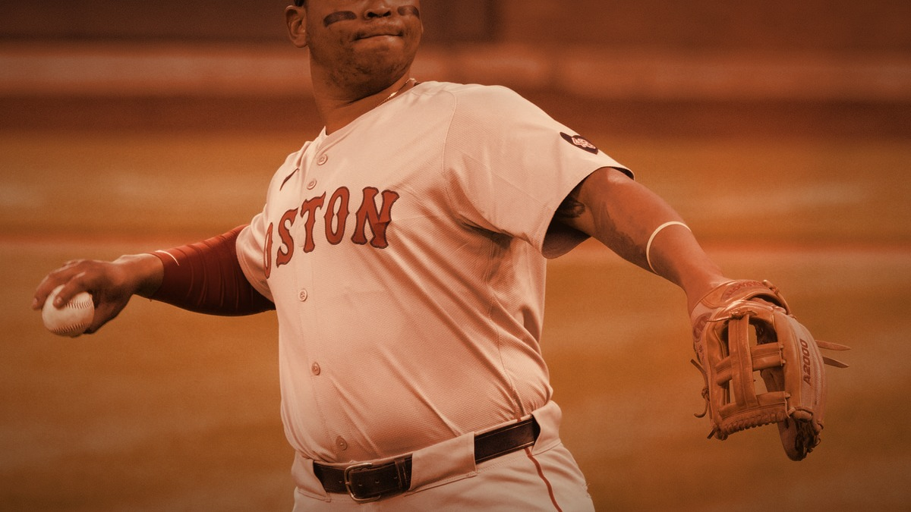
The Giants Are Playing Their Best Baseball of the Season, and the Brewers Series Just Proved It
3-2 over the last five games, with two wins over the MLB-best Brewers including a 16-3 rout. This is the best the Giants have looked all year.
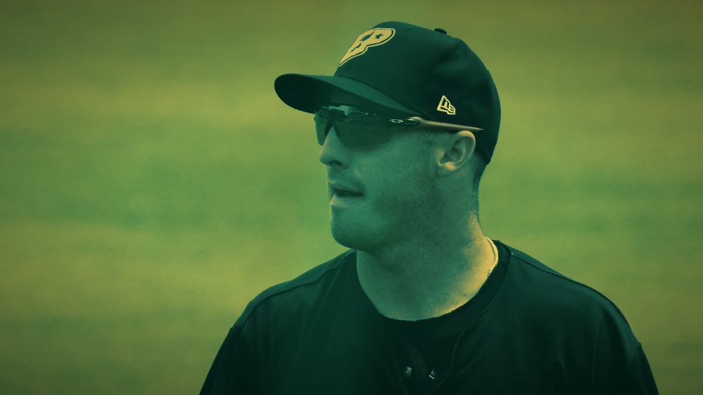
The A's Free Fall Never Actually Stopped: 45-63, Fourth Place, and a Trade Deadline That Can't Come Soon Enough
Nine losses in a row was supposed to be the bottom. Instead the A's have gone 4-8 since, sitting 18 games under .500 with Monday's trade deadline arriving right on schedule.
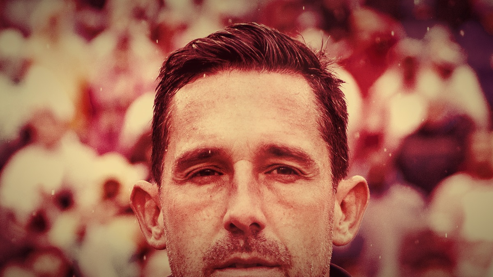
Kyle Shanahan's Car Accident Was Scarier Than We Knew, and Niner Nation Just Needs Him Healthy
A severe concussion, a broken nose, three broken ribs, a broken hand, and 40-plus stitches from the July 14 crash. He'll be limited early in camp while Chris Foerster picks up the load. Heal up, coach.
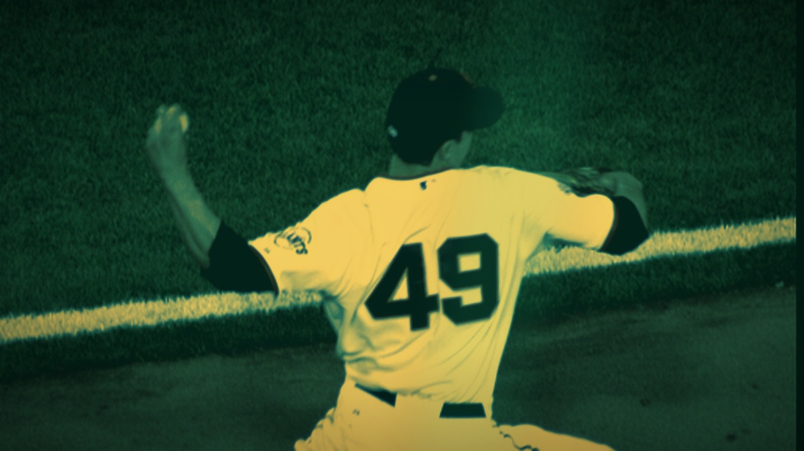
Red Sox 4, Athletics 2 (10): Jacob Lopez Deals, the Offense Sleeps, Extras Bite Again
Lopez strikes out eight, Heim and Butler homer, and Monasterio's two-run shot in the tenth ends it. A's fall to 45-63.
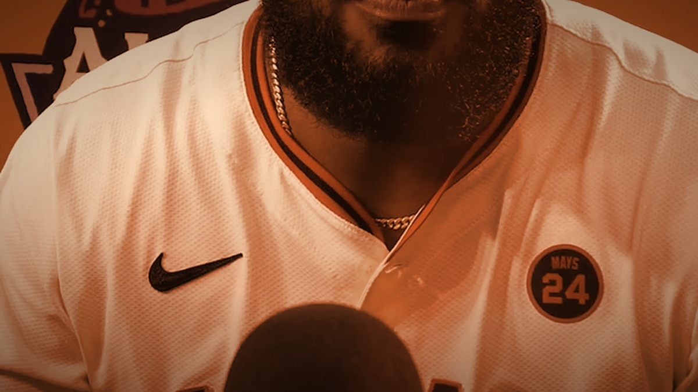
Giants 16, Brewers 3: The Offense Finally Erupted, and It Was Glorious
Seventeen hits, a seven-run sixth, and Daniel Susac's first two career homers bury the MLB-best Brewers. Giants take the series and improve to 46-62.
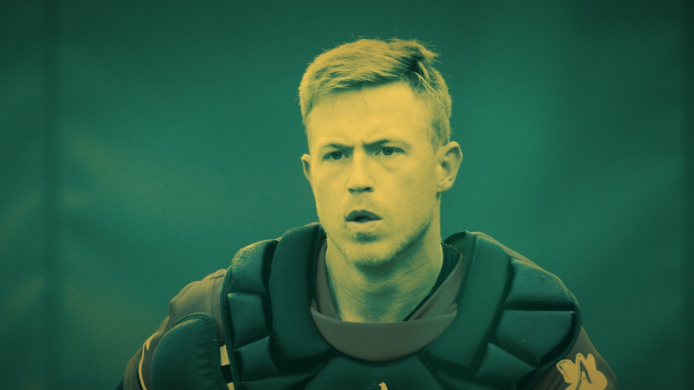
Athletics 4, Red Sox 3: Brian Serven's Homer Holds Up, Tommy White Goes 4-for-4
Gage Jump goes six scoreless, Serven's two-run homer breaks it open, and Tommy White goes 4-for-4. Hogan Harris survives a two-run ninth. A's improve to 45-62.
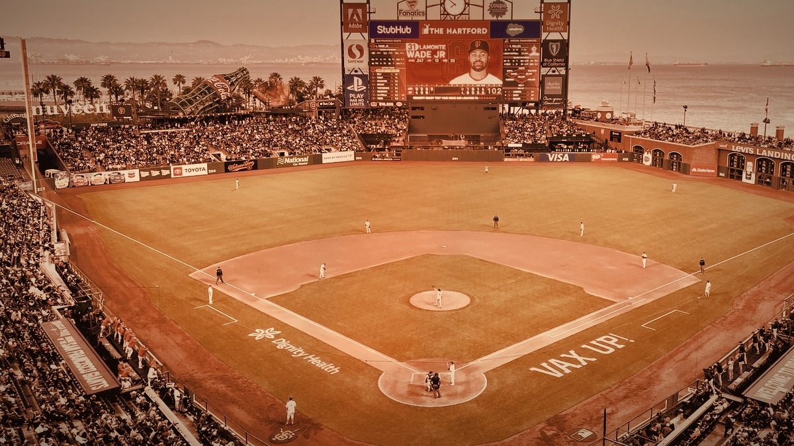
Brewers 8, Giants 2: Landen Roupp Never Found It, Bryce Eldridge's Homer Was the Only Answer
Roupp can't escape the fourth, Logan Henderson is nearly untouchable, and Milwaukee piles up 13 hits. Eldridge's eighth-inning homer is the only answer. Giants fall to 45-62.
Giants 3, Brewers 0: Tyler Mahle and Grant McCray Shut the Best Team in Baseball Down
Tyler Mahle throws six shutout innings, Grant McCray's two-run homer does the rest, and the Giants blank the 66-win Brewers at Oracle Park. Giants improve to 45-61.
Red Sox 4, Athletics 2: Ceddanne Rafaela's First Career Slam Beats a Costly No-Hit Bid
Jack Perkins carries a one-hit bid into the sixth before Rafaela's grand slam breaks it open. Soderstrom and Heim homer in the loss. A's fall to 44-61.
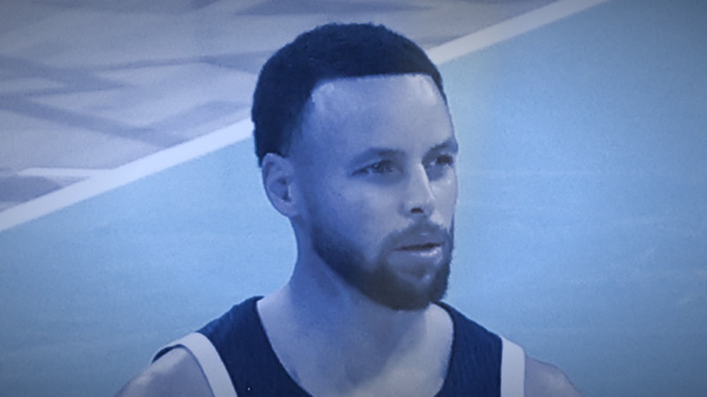
The Front Office Keeps Failing Steph Curry, and "He Could Leave" Doesn't Sound Crazy Anymore
Wasted draft capital, half-measure trades, and a supporting cast that keeps aging out from under him. For the first time, imagining Steph somewhere else doesn't feel absurd.
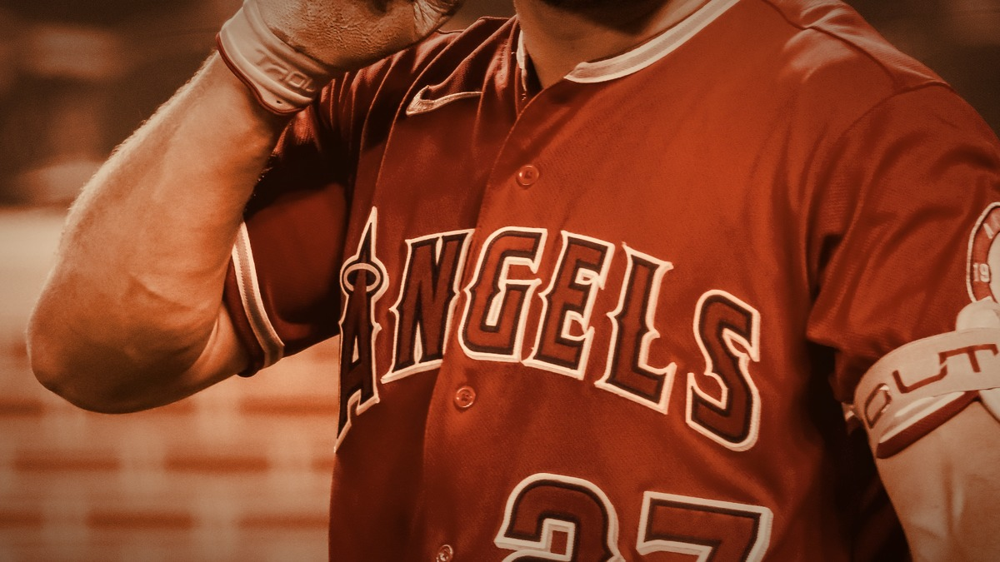
Angels 4, Giants 3: Mike Trout Ruins the Sweep, Whisenhunt Gets Rocked
Trout goes 4-for-4 with two homers off him, Arraez's two-run ninth falls one out short, and the Giants fall to 44-61 after taking the first two of the series.
Twins 11, Athletics 8: Down 7-0 Before Springs Left Hurt, and the Hole Was Just Too Deep
Jeffrey Springs exits early with an apparent injury, Kurtz's three-run homer sparks a real comeback, but it falls short. A's drop the rubber match, fall to 44-60.
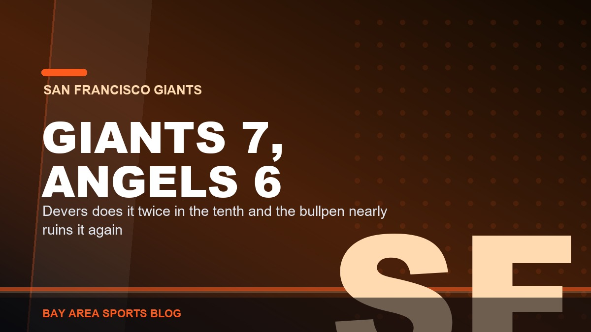
Giants 7, Angels 6 (F/10): Devers Does It Twice, and the Bullpen Nearly Ruins It Again
A first-inning homer, a tenth-inning walk-off single, and a blown two-run lead in between. Giants snap a five-game skid and move to 43-60.
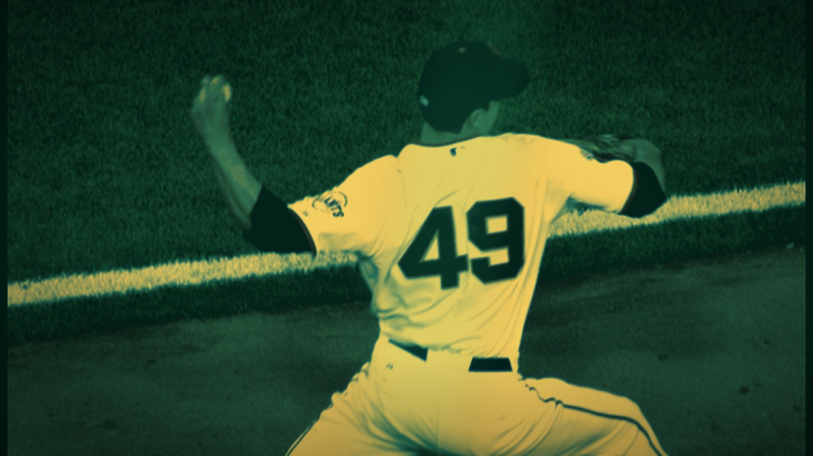
A's 2, Twins 0: Jacob Lopez Deals, Four Relievers Slam the Door
One hit allowed in five innings from Lopez, one more in four from the bullpen. Butler and Soderstrom drove in the only runs the A's needed. A's improve to 44-59.
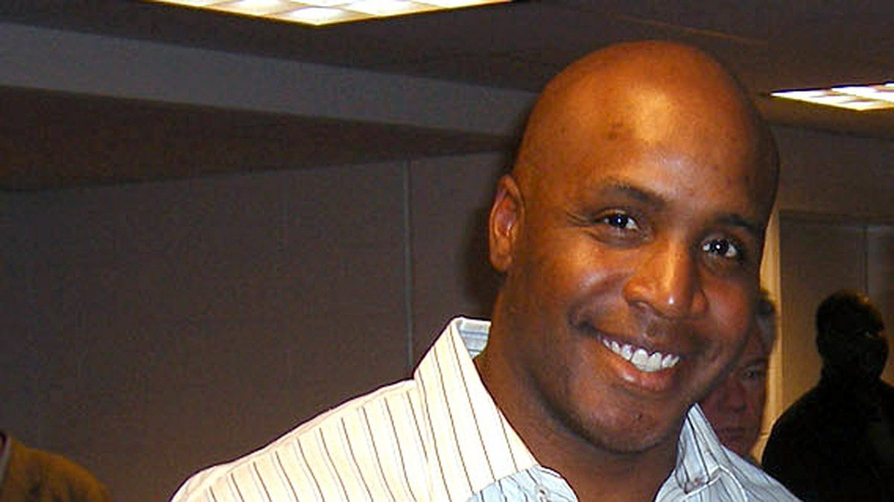
103 Wins and Nothing to Show For It: The 1993 Giants and the Race That Forced Baseball to Invent the Wild Card
Bonds' MVP season, two 20-game winners, 103 wins, and a 12-1 season-ending humiliation in Dodger Stadium. Baseball changed the rules that same month.
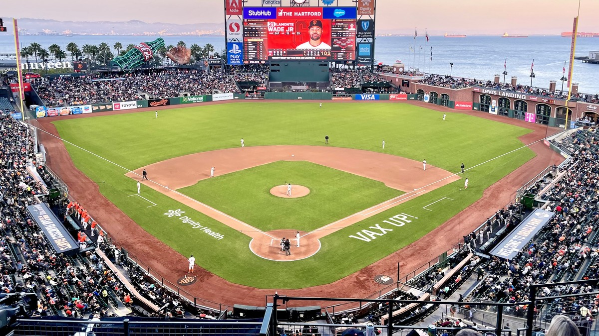
Bryce Eldridge Keeps Impressing, and He Is the Only Future This Giants Team Has
.275 with a .368 on-base percentage, a .490 slug, 10 homers and 30 walks in 57 games at 21 years old. The franchise first baseman is already here.
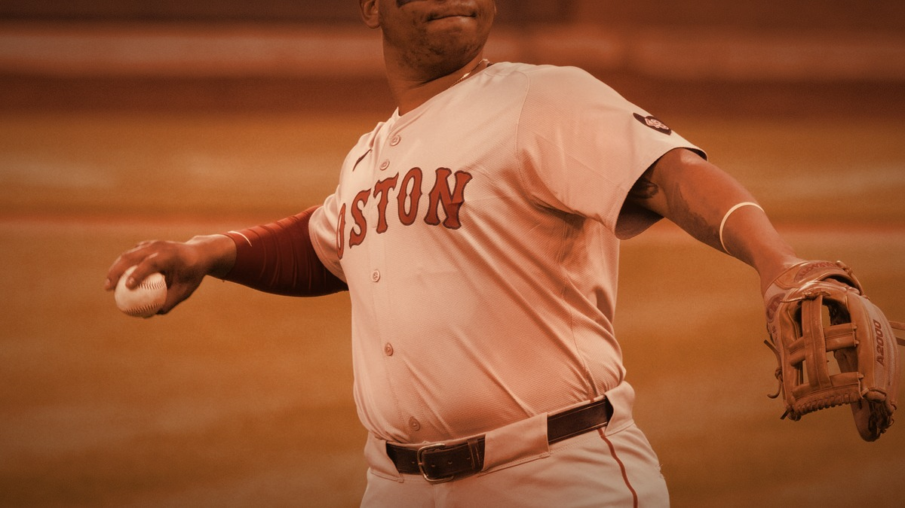
Royals 5, Giants 4: We Finally Took a Lead, and It Lasted Half an Inning
Roupp struck out seven, the Giants led 3-2 in the seventh, and the Royals took it right back. Swept, five straight, 42-60.
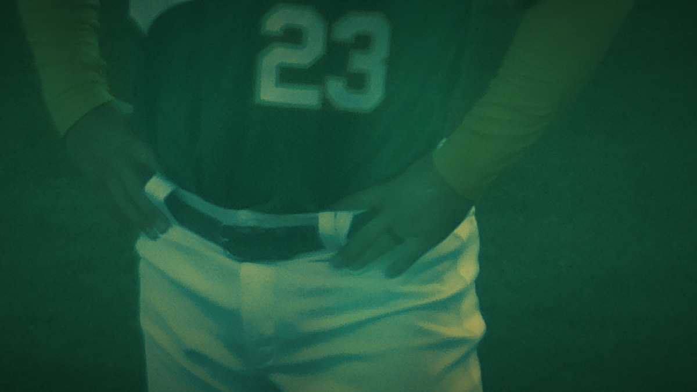
Diamondbacks 15, A's 5: The Fifth Inning Went On Long Enough To Grow a Beard
Five homers, a seven-run fifth, and eight earned runs from a reliever who got two outs. Arizona takes the series.
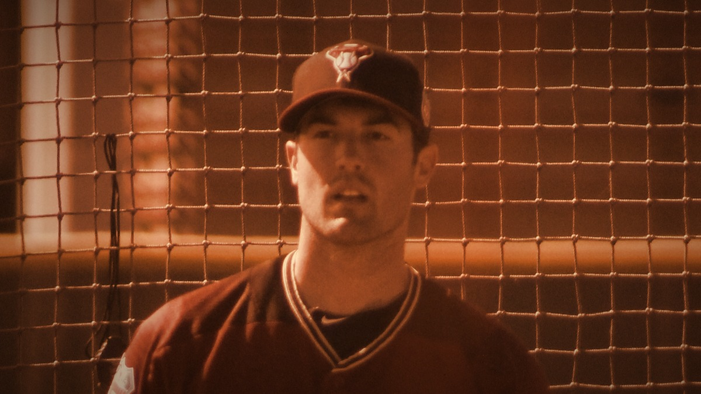
Royals 3, Giants 2: We Are Now Losing the Quiet Ones Too
Five hits, one inning of offense, and a fourth straight loss. Mahle is 2-9. The Giants are 42-59.

The A's Stole One Back in the Ninth and Then Walked It Away in the Tenth
Wilson tied it with two outs in the ninth, Heim led it off in the tenth, Medina walked the bases loaded. Arizona 6, A's 5.
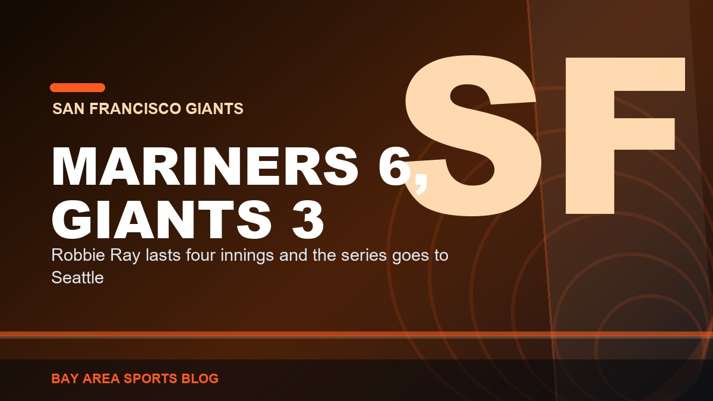
The Giants Lost the Series in Seattle, and the Fresh Start Lasted Exactly One Game
Eldridge homered 407 feet, the Giants led 2-0 after one, and it still ended Mariners 6, Giants 3. Five hits. Series gone.

The A's Out-Hit the Nationals and Lost 5-2, Because of Course They Did
Eleven hits, two runs, and back-to-back Abrams and Crews homers in the fifth. One day after winning 15-1, the series is gone.

The A's Just Beat Somebody 15-1, and I Checked the Box Score Three Times to Be Sure
JT Ginn no-hit Washington into the seventh, three homers, and the 10-game losing streak is finally dead.

The Giants Blew a 3-0 Lead to the Mariners, and I Am Sick of Writing This Column
Webb carved for six and two thirds, Devers and Adames homered, and one Cole Young swing erased it all. Mariners 4, Giants 3 in ten.

Bay Area at the 2026 All-Star Game: Langeliers Reached Twice, Arraez Got One Swing, Webb Never Threw
AL 4, NL 0 in Philadelphia. Langeliers started and reached base twice. Arraez struck out in his lone at-bat. Webb never left the bullpen.

Raiders 2026 Preview: Kubiak, Cousins, and a Rookie Named Mendoza Try to Fix a 3-14 Mess
A Bay Area take on the reset in the desert: new coach, a bridge QB, the No. 1 pick, Jeanty, and a brutal AFC West.
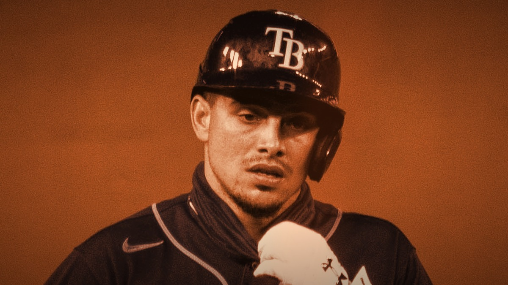
Adames Grand Slam, Roupp Shutout: Giants Blank the Mariners 7-0 to Open the Second Half
Willy Adames' seventh career grand slam, a Bryce Eldridge homer, and seven shutout innings from Landen Roupp in a statement road win in Seattle.

Giants at the All-Star Break: 41-55 and a Rookie Manager Learning on the Job
Fourth in the NL West, 20.5 back. The first-half breakdown, Vitello's rookie half, and the reset coming August 3.

The Giants Bullpen Finally Held One: Erik Miller Slams the Door in a 3-1 Win
Two straight wins after a brutal opener, and for once the ninth inning was boring. Adames three hits, McDonald seven.

Nationals 23, A's 4: Oakland Opens the Second Half With an Embarrassing Blowout
Washington hung 23 in West Sacramento, Gage Jump got shelled, Chaparro homered twice. Soderstrom and Langeliers went deep in a wipeout.

A's at the All-Star Break: 41-55, a Nine-Game Skid, and the Mirage I Warned You About
First place to fourth, eight back, nine straight losses into the break. The first-half breakdown and why the second half gets worse.

I Told You the A's Were a Mirage: Nine Straight Losses, 9-1 to the White Sox
1-9 in their last ten, a 7.09 ERA, a free fall to 41-53. This was always coming.

Jerry Rice Says This Is the Year the 49ers Break the Super Bowl Drought
"I think this is the year for the Niners." The GOAT called his shot at Lake Tahoe.

Casey Schmitt Is Having an All-Star Breakout Season, Even If the All-Star Game Didn't Notice
19 homers, a .494 slug, a 118 wRC+, and an All-Star case the NL roster ignored.

Tyler Mahle Finally Won a Game, and Casey Schmitt Made Sure It Counted
Seven strong innings, a three-run Schmitt homer, and a 4-2 win over the Rockies.

The A's Lost 1-0 Again, Eight Straight Now, and They Are Coming Back to Earth Fast
Four-hit by the White Sox, an eighth straight loss, and a free fall to 41-54.

A's at White Sox, July 10: Six Straight Losses and Jacob Lopez's 7.04 ERA Walk Into Chicago
A 41-52 team on a six-game skid, a 7.04 ERA on the mound, and a clear road underdog. A preview.

This Might Be the Best Team Kyle Shanahan Has Ever Had
Purdy, a healthy McCaffrey, Evans and Kirk, and Bosa and Warner back. If they stay healthy, this could be the year.

The Giants Blew Another One, and It Is the Same Sickening Story
Two outs from beating the worst team in baseball, Caleb Kilian gave it all back. Rockies 4, Giants 3.

Rafael Devers Looks Wide Awake Again for the Giants
Another one out at Oracle Park, his 19th, and after a short cold spell the slugger looks locked in again.

Giants vs Rockies, July 10: Ray Has to Bury Colorado, and Eldridge Is the Reason to Watch
A game they have to win, and a 6-foot-7 rookie turning inside pitches into splash hits.

Tony Vitello Was Not Ready to Manage in the Majors, and He Told Us So Himself
"I can't talk down to these guys." That one admission explains the whole season.

The Giants Might Actually Have Something in Carson Whisenhunt
Two starts, two wins for the rookie lefty, and three homers in an 8-2 win over Colorado.

The A's Got Swept and Have Now Lost Six Straight, 4-1 to the Tigers
Valdez retired the first 11, three Tigers homers, and a rookie went deep on his first swing.

Two Hall of Famers, One Job: The Montana-Young Controversy and the Trade That Split the Bay
The 49ers had two HOF quarterbacks, then traded Joe Montana. How it happened, and why they were right.

LeBron and Curry on the Same Team: What It Would Mean for Their Legacies and the NBA
LeBron is leaving L.A. and the Warriors want him next to Steph. What it would really mean.

This Giants Season Is Over. Build Around Bryce Eldridge and Explain the Bullpen.
At 35-49, the year is done. The future is Eldridge, and Posey's no-leverage bullpen makes no sense.

Dylan Cease Nearly No-Hit One of the Worst Giants Teams I Can Remember
Eight and a third hitless innings and a 10-0 beatdown at home.

A Rookie Named Melton Made the A's Look Like a Beer-League Team, 6-1
Nine strikeouts from a kid on his sixth start.

I Didn't Like the Tony Vitello Hire, and I'm Not Going to Pretend Otherwise
Bold is not the same as smart.

The Giants Woke Up the Worst Offense in Baseball
A quiet Blue Jays lineup found life at Oracle Park.

Brandon Aiyuk Has Gone Full Antonio Brown, and It's Hard to Watch
The 49ers success story that curdled.

The 49ers Are Still Paying For Vegas
That overtime in Allegiant Stadium still shapes everything.

The Warriors Are Out of Easy Answers, and That's the Whole Story
The grace period the dynasty bought is finally over.

The Giants Keep Promising October. Oracle Park Is Still Waiting.
Fine does not fill the ballpark in September.

The Sharks Rebuild Finally Has a Pulse, and His Name Is Macklin Celebrini
Seven springs without playoff hockey, and suddenly the Tank matters.

The A's Play in Sacramento Now, and That's the Whole Ugly Story
A century of Oakland baseball, boxed into a Triple-A park.

The NFL Blackballed Colin Kaepernick for Kneeling, and Everyone Knows It
It was never about talent.

Why the Bay Area Is One of the Greatest Sports Regions
The big-picture case for the region.

Team of the Decade: When the 49ers Ran the NFL
Five Super Bowls and the gold standard of a generation.

73-9: The Best Regular Season Ever, and Then They Added Durant
The greatest record ever, a crushing Finals loss, and the answer.

From Rick Barry to the Splash Brothers
A 1975 upset and a modern dynasty that changed basketball.

Even-Year Magic: The Giants Dynasty of the Early 2010s
Three titles in five years, all in even years.

Barry Bonds: The Loudest Bat San Francisco Ever Saw
73 home runs and four straight MVPs.

Jeff Kent: The MVP Nobody Had to Like
The best offensive second baseman of his time.

Bochy's Wizardry and the Core Four Bullpen
How close games became championships.

Madison Bumgarner Owned the 2014 World Series
Five scoreless to close Game 7 on two days' rest.

The Catch, and the Dynasty It Started
Montana to Clark at Candlestick, 1982.

The Night Klay Thompson Scored 37 in a Quarter
Thirteen shots, thirteen makes, one quarter.

Welcome to Bay Area Sports Blog
What this blog is and why it exists.